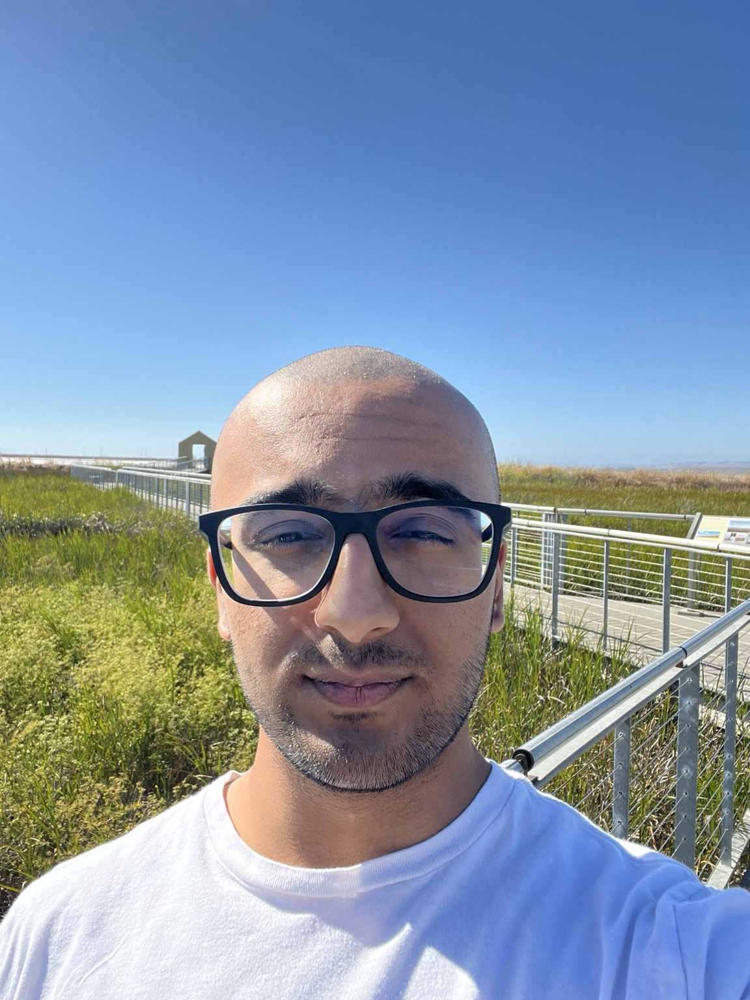

I am a researcher working at the intersection of interpretability and capability in frontier models. More recently, my research has been targeted towards training over large, highly variable and heterogeneous data distributions, such as pretraining.
In the recent past, I've also worked on Recursive Self-Improvement AI (RSI). For ~3 years, I worked as a Research Scientist at nanoHUB, focusing on agents that conduct scientific research at the frontier.
I am open to work. Feel free to reach out!
Open to work·San Francisco Bay Area
If you're interested in my work or would like to connect, reach me any of these ways.